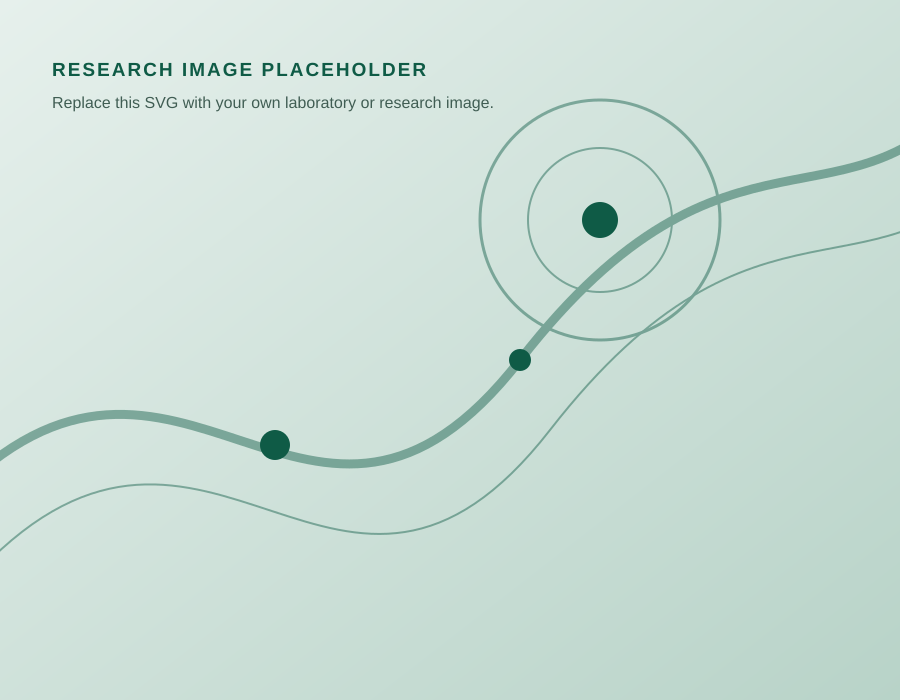

Flexible and wearable electronics
Designing sensors, conductors, and integrated systems that maintain performance while bending, stretching, and conforming to complex surfaces.
What we investigate
We develop soft materials, adaptive interfaces, and manufacturing methods that connect rigorous materials science with human-centered applications.
Our research begins with a fundamental question: how can materials and devices interact seamlessly with complex, dynamic environments? We combine materials design, mechanics, fabrication, and device engineering to investigate this question across multiple scales.
The descriptions below are starter copy. Replace or expand them with active projects, funding acknowledgements, collaborators, and representative research images.
Five directions
Designing sensors, conductors, and integrated systems that maintain performance while bending, stretching, and conforming to complex surfaces.
Developing thin, soft, skin-compatible platforms for sensing, stimulation, monitoring, and seamless interaction with the human body.
Creating adaptive systems that actively tune stiffness or adhesion in response to physical, electrical, thermal, or environmental inputs.
Exploring digital fabrication, functional inks, and process–structure relationships for rapid, scalable production of multifunctional devices.
Investigating responsible material choices, reduced-waste processes, recoverable components, and device architectures designed for circularity.

Replace with a current project imageFrom idea to impact
Projects in the group may combine polymer science, functional materials, interfacial mechanics, printing, device fabrication, electronics, and biological validation. This integrated approach helps us pursue both new scientific understanding and useful technology.
Explore publicationsWe value productive connections across disciplines, institutions, and application areas.